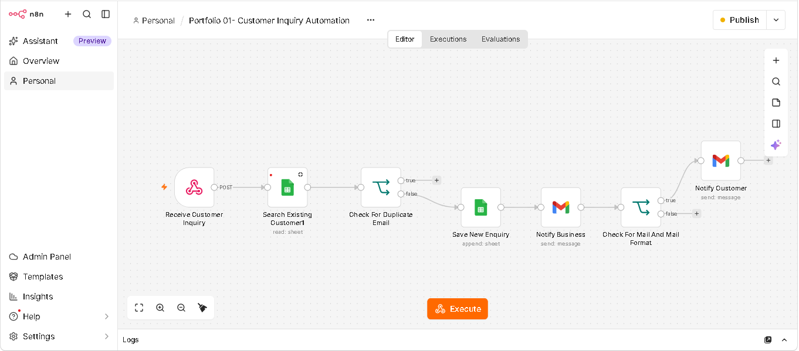
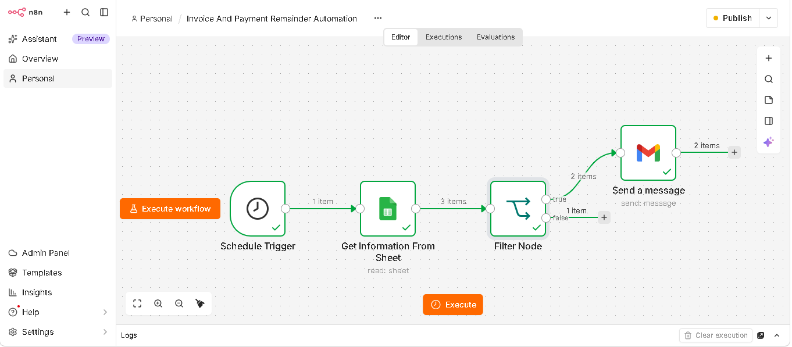
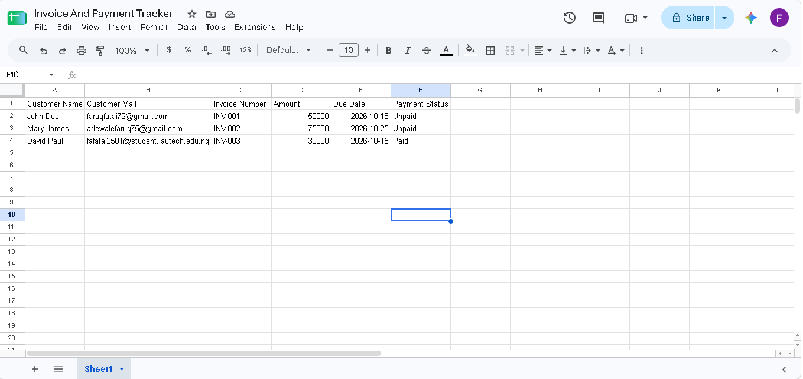
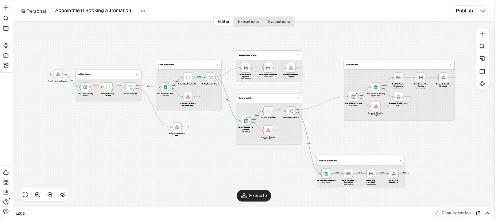
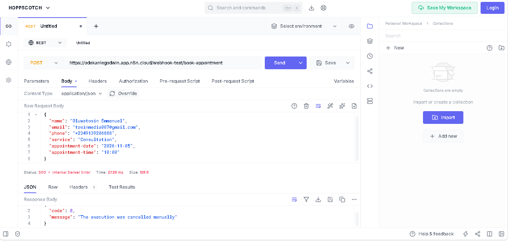
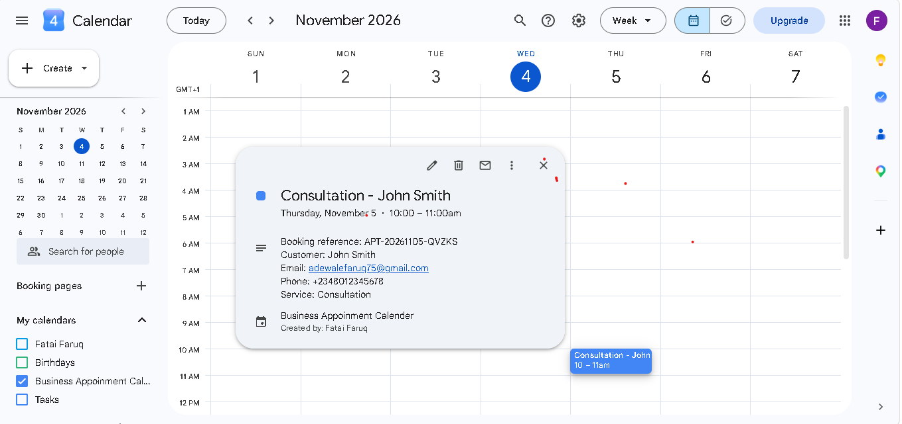
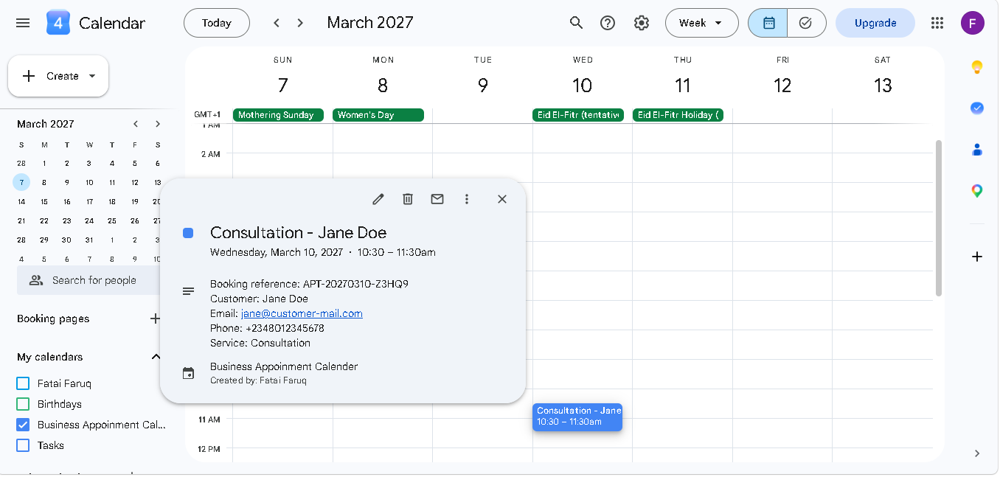
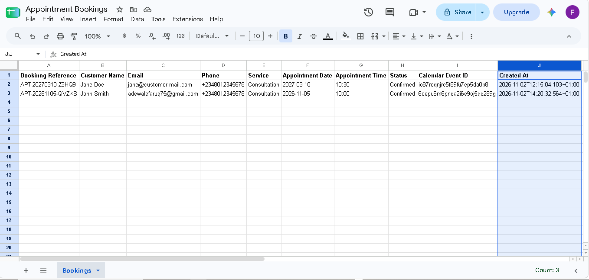
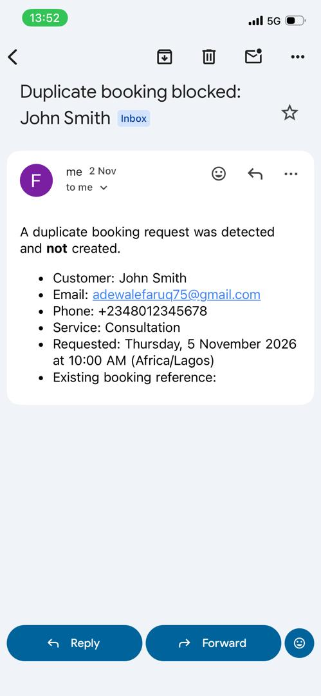

My Projects
A selection of automation systems I've built and tested.
01. Customer Inquiry Automation
Collects customer inquiries, checks for duplicate email records, saves information to Google Sheets and sends email notifications to customers and owners.



02. Invoice And Payment Remainder Automation
An automated backend system that tracks client payment deadlines in a spreadsheet and automatically dispatches targeted email reminders before accounts become overdue




03. Appointment Booking Automation
Receives appointment requests, checks calendar availability, prevents duplicates, records bookings and sends customer and owner notifications.










04. Inventory Management Automation
Monitors product quantities using scheduled checks and automatically emails the business owner when stock falls below its reorder level.